The Web of Influence
Teachers and pupils, quotations, borrowings and meetings between composers, painters and poets, each with its sources.
343 sourced connections
80 composers · 130 other figures
Composers and other figures, in order of birth.
Bach’s connections, the most in the web.
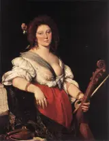
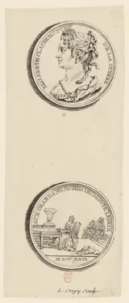


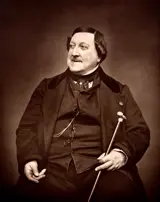


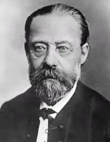

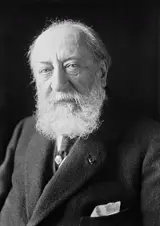
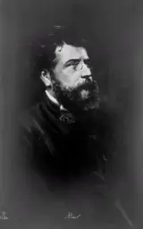


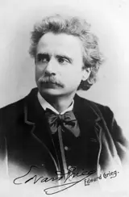


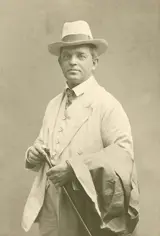


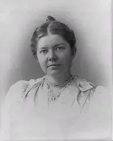


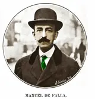


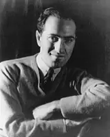


Select a portrait to show its connections. Drag to move · scroll to zoom
No connections match these filters.
Portraits mark people; lines join their encounters, borrowings and collaborations. Birth years run from left to right, with early centuries compressed and crowded generations spread out. Each line opens the connection’s date, account and sources.
Further reading
- Joseph N. Straus, Remaking the Past: Musical Modernism and the Influence of the Tonal Tradition (Harvard University Press, 1990).study
Examines musical modernism in relation to inherited tonal traditions; a theoretical counterpart to Burkholder’s study of specific borrowing practices.
- Kevin Korsyn, ‘Towards a New Poetics of Musical Influence’, Music Analysis 10, nos. 1–2 (1991).study
A theoretical treatment of musical influence. Its arguments are interpretative and should be read alongside documentary evidence.
- J. Peter Burkholder, ‘Borrowing’, Grove Music Online (Oxford University Press, 2001).reference
A reference article on musical borrowing; the link gives the bibliographic record deposited by the publisher.
- J. Peter Burkholder, All Made of Tunes: Charles Ives and the Uses of Musical Borrowing (Yale University Press, 2004 paperback).study
Treats borrowing as a compositional practice and does not confine itself to a list of recognisable quotations.
- Charles Rosen, The Classical Style: Haydn, Mozart, Beethoven, expanded edition (W. W. Norton, 1998 paperback).study
Explains musical conventions through Haydn, Mozart and Beethoven; the expanded edition includes a chapter on late Beethoven.
The cards, filters and playable examples need JavaScript.